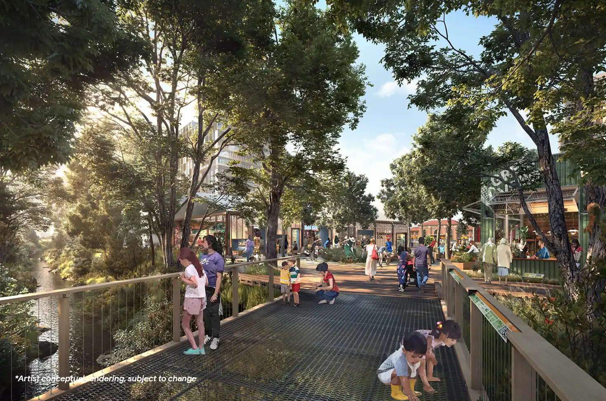
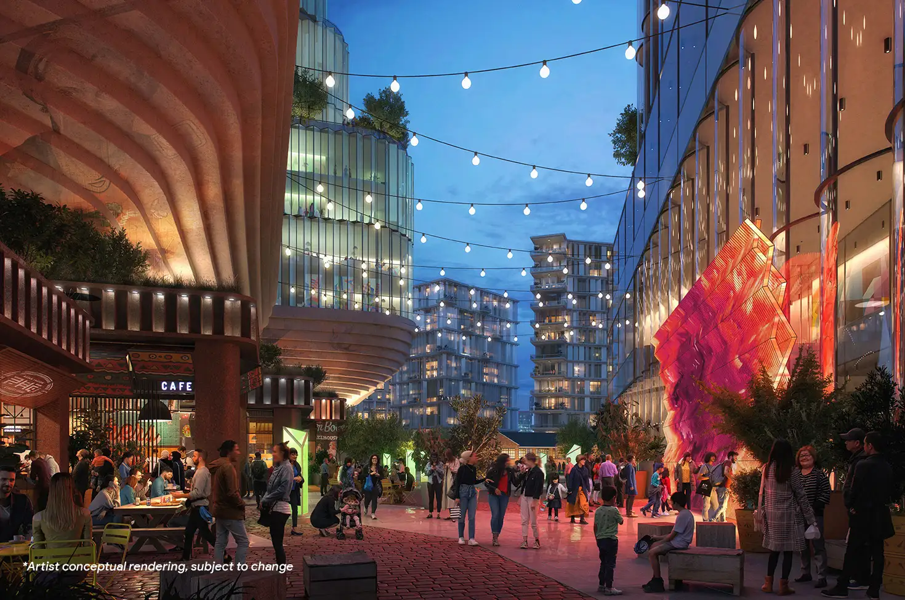
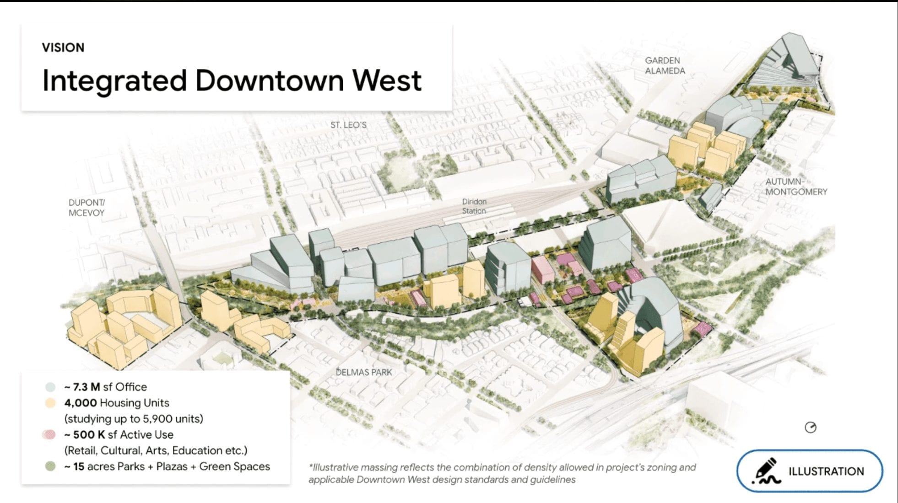
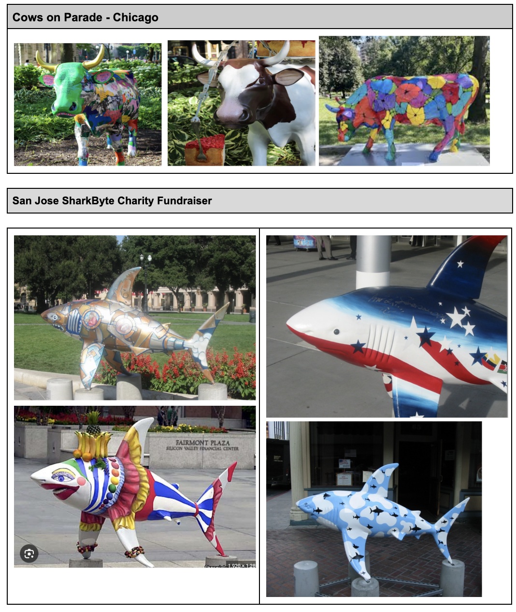
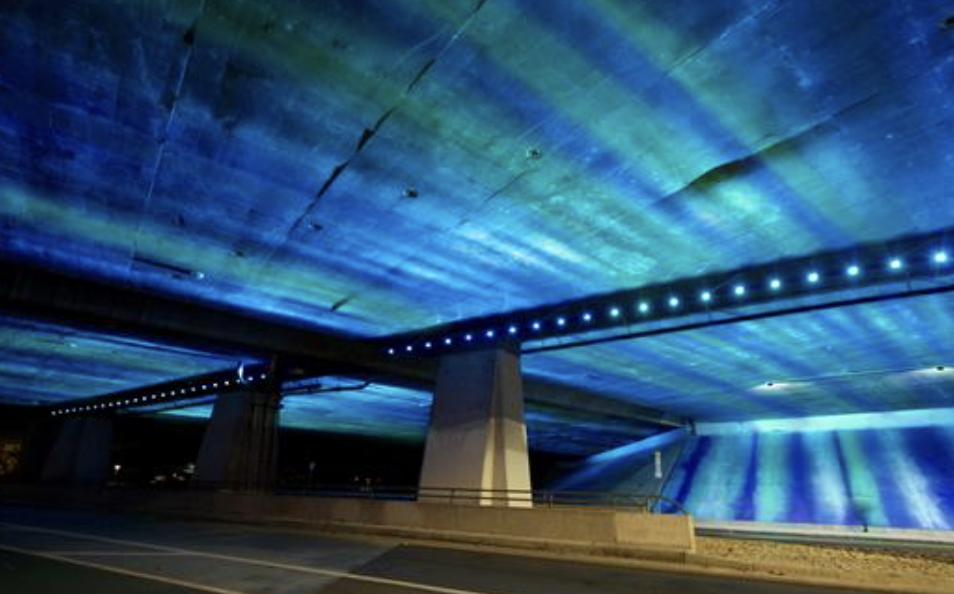
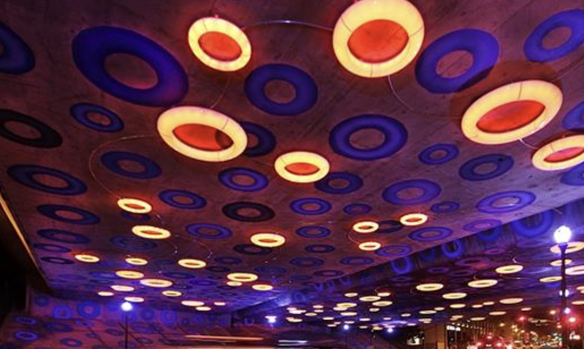

A conceptual rendering of Downtown West's planned central plaza, with the San Jose Water Works building visible at left, the one existing structure Google's plan is built around rather than over.

A conceptual rendering of the river walk planned along the Guadalupe, meant to connect the new development back to downtown.

An evening view of Downtown West's proposed retail street, part of the original pitch for 7.3 million square feet of office space and thousands of new residents.

The official site plan for Downtown West, laying out the proposed office space, housing units, and parkland across Google's 80-acre site.
Public Art

Chicago's Cows on Parade, the 1999 public art fundraiser that inspired San Jose's own shark project two years later. Some of the 100 fiberglass sharks were commissioned for San Jose's 2001 SharkByte fundraiser, painted by a local artist and later auctioned for charity.

The Sensing You installation under Highway 87, its rings quiet between activations.

Fully lit, Sensing You triggers a pattern when traffic and light set it off.